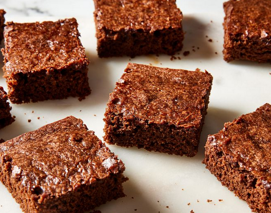

Vegan Brownies Recipe 😊

Vegan Brownies Recipe
These vegan brownies are made with cocoa powder for a rich and gooey chocolaty treat. If you prefer brownies that are a little more solid, you can bake the brownies for longer than the recommended time. Great for people with egg or dairy allergies, too!
Ingredients
- All-purpose flour - 2 Cups
- Granulated white sugar - 2 Cups
- Unsweetened cocoa powder, sifted - 3/4 cups
- Baking powder - 1 tsp
- Salt - 3/4 tsp
- Hot water or coffee - 1 Cup
- Vegetable Oil - 1/2 Cup
- Vanilla Extract - 2 tsp
Steps
- Gather all ingredients. Preheat the oven to 350 degrees F (175 degrees C). Grease a 9x13-inch baking dish with baking spray; line bottom with parchment paper.
- Whisk flour, sugar, cocoa powder, baking powder, and salt together in a large bowl until combined.
- Pour in water (or coffee), vegetable oil, and vanilla; mix until well-blended. Spread batter evenly in the prepared dish.
- Bake in the preheated oven until top is no longer shiny and center feels just set when gently pressed, about 30 minutes.
- Let cool for at least 10 minutes before cutting into 15 squares. Enjoy!
Source: Recipe Source